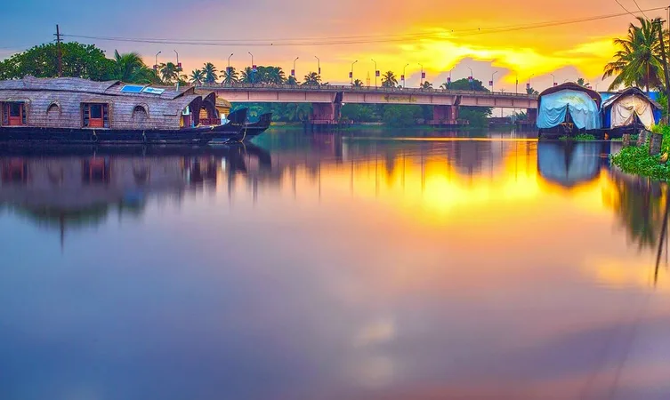
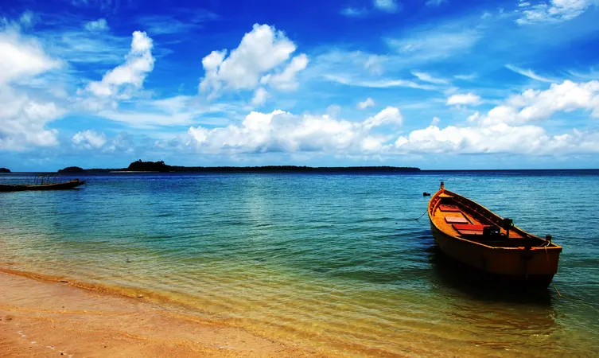

Along the Arabian Sea in the southern state of Kerala lies Alleppey. The placid backwaters here are well known for their houseboats and the natural charm of the region adds as a captivating attraction. A houseboat stay allows tourists to cherish some memorable views of the lush green landscape and get to know more about the local culture and traditions. The magic of nature unwinds along this ride.
Alleppey also has beaches which are known for their water sports which are thrilling and adventurous. A number of watersport activities like surfing, parasailing, and other thrilling rides can be enjoyed here. The sandy beaches of Alleppey are ideal to go for those sunset visits or an early morning walk.
The most popular tourist activity here are the snake boat races in which participants paddle with their oars chanting loudly, the snake boat races are among the highlights for tourists visiting Alleppey.
For wildlife enthusiasts there are a few sanctuaries that are located close to Alleppey. About 164 kms from Alleppey is the Periyar National Park and Wildlife sanctuary which is also an elephant and tiger reserve.
To enjoy the scenic beauty of this place one can either travel by bus, rail or air. The nearest international airport is 78 kms away at Cochin. About 4 kms away is the railway station and also has good road transportation with number of buses traveling to and from here.
Top Desinations
Krishnapuram Palace
Are you interested in exploring the history and culture of the Alleppey town? If yes, then there is no better way to begin than paying a visit to the grand Krishnapuram Palace. Popular as the historical foothold of Travancore kingdom, this grand palace was built by Anziham Thirunal Marthanda Varma.
The historical beauty stands tall as an epitome of Kerala architecture and is certainly a treat for architecture lovers and history buffs. The palace is now transformed into a museum which stores several priceless sculptures, canvas paintings, bronze antiques, and other relics.
The architectural style of the palace comprises dome-shaped windows, gabled roofs, and narrow corridors, which reflects the classic art of South India.
Kuttanad

Covered with the lush green blanket, this place is truly a paradise for nature lovers. Kuttanad is situated in a serene location, away from the city clamor and if you are looking out for a peaceful escape from your hectic life, this is an ideal getaway destination for you.
Sprawled over a large portion of Alappuzha and some of the areas of Kottayam district, Kuttanad is considered as the rice bowl of Kerala. The most peculiar thing about Kuttanad is its geography. The place is situated around 2 meters below the sea level which makes it the lowest altitude place in India.
In addition to this, a trip to this place will also serve you with the most charismatic sceneries that will make your holidays unforgettable.
Alleppey Beach
With tempting natural beauty in its right hand,
Alleppey beach of Kerala is a major pull for hundreds of tourists every day,
considering its calm shores, golden sands, and alignment of palm trees. The
beach is an ultimate picnic spot for locals at one end and a place for
relaxation for travelers on another who do not miss to wash their feet, before
heading to backwaters and houseboat ride. An age-old sea-extended iron pier
adds another charm to it which is a picture perfect location for photographers.
Also known as ‘Venice of the East’, Alappuzha
beach is known for hosting events like beach festival, sand art festival and
much more that opens up as a gateway to locals. What adds another insta-worthy
attraction nearby is an old lighthouse, which reminds one of the needs of
sailors. Without any doubt further, a visit to Kerala is just not complete
without visiting here, sitting near the shore, and soaking in the fresh misty air.
Marari Beach

Considered as the delight of Malabar Coast, Marari Beach is a perfect destination for a beach holiday. With its turquoise blue water, coconut trees and shimmering sand, the charm and splendor of this beach is second to none.
Situated at a distance of around 11 km from Alleppey, it is also a hotspot for leisure and adventure activities such as fishing, swimming, and parasailing. If you happen to visit here during the month of August, you can also relish the activity of Snake Boat Racing.
The serenity and visual appeal of Marari Beach can’t be summed up in words. If you are a nature lover who is looking for some calm space to spend your vacation, visiting Marari Beach is among the top things to do in Alleppey for you.
Coir Museum
The International Coir Museum in Alleppey is a place where you will get to see a wide range of products composed of dried coconut husk. From bags, ornaments, and wall hangings to birds and animals, this place has something for everyone. After exploring its products, you can also see how coir is processed and given different shapes.
In addition to this, you can shop handicrafts and souvenirs at the souvenir shop. If you wish to delve into the rich culture and traditions of Kerala, this is the right place to quench your thirst for knowledge